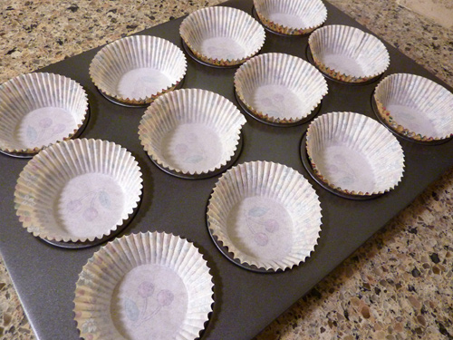
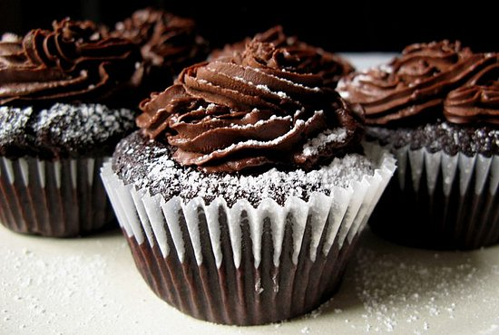

Instructions:
(Click on each line of instructions as you progress to highlight and easily keep track of where you are!)




Make these puppies, slap on some icing, and done! These will turn even Morrissey's smile upsidedown. You can also make a chocolate cake using this recipe - just put the batter in a cake pan instead of a muffin tin. Magic. If the cupcake pictures are making you too hungry, click each image to hide.
(Click on each line of instructions as you progress to highlight and easily keep track of where you are!)